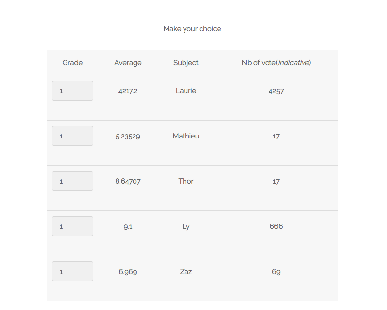
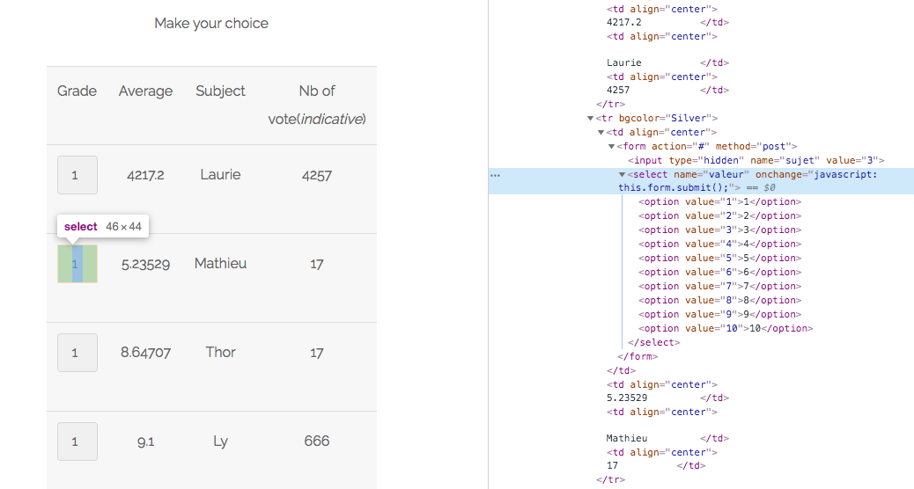
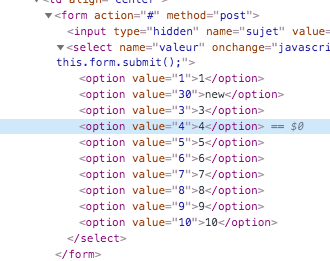
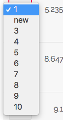
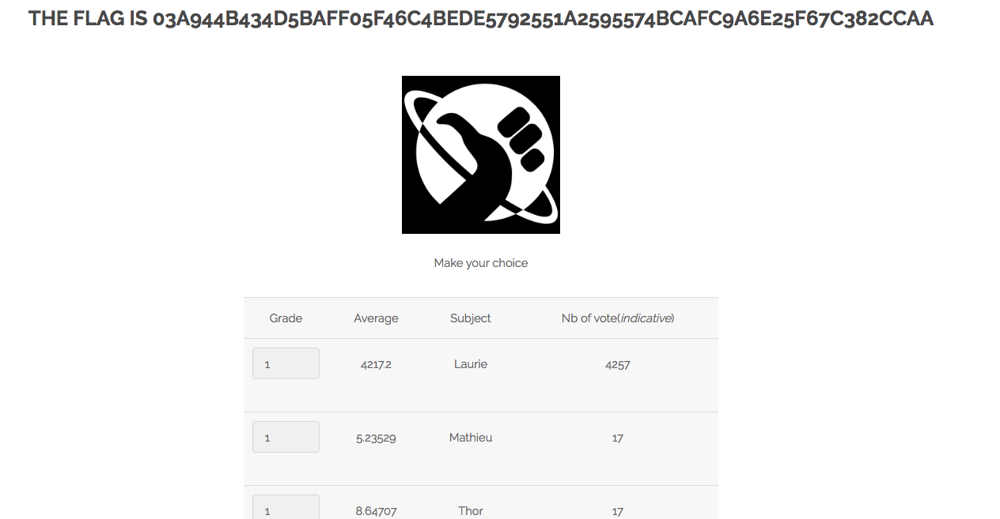

Si on vas sur la page survey du site, on peut voir un tableau avec des valeurs
En allant dans la console de developpement, on peut voir qu'il y a des input de type select
On change la valeur de l'option du select par une nouvelle
On choisis la nouvelle valeur, cela envoye le formulaire
La nouvelle valeur a etait ajoute dans la base de donnee
Mettre une protection du coter serveur qui dans se cas check si la valeur est entre 1 et 10